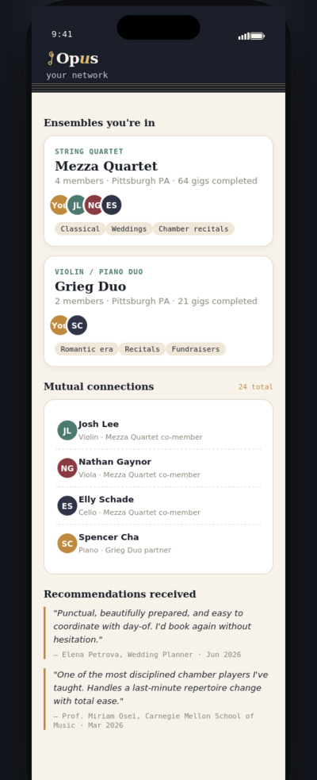
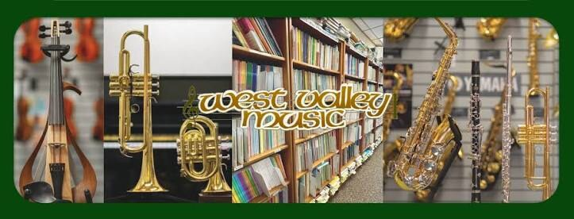
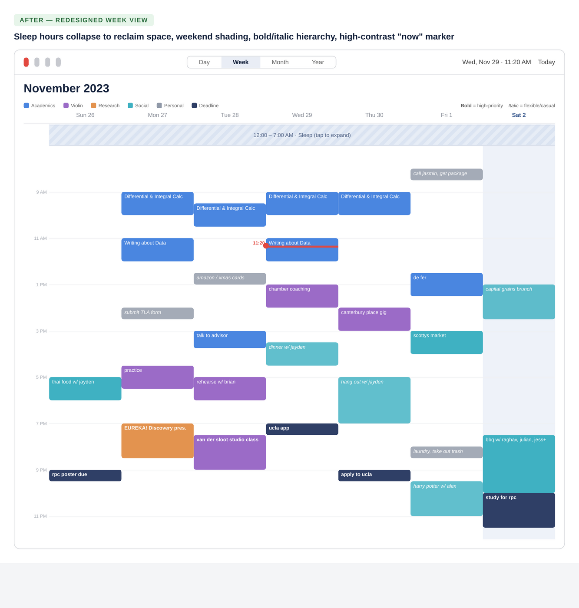

Cassandra May
Systems thinker, marketing and product strategist, and concert violinist. CMU '26 — Systems DesignCombination of Information Systems, Human-Computer Interaction, and Decision Science × Violin


Opus

West Valley Music

Rethinking Apple Calendar

Photography & Blog
Also on the Résumé
Tubics · SEO Intern, Vienna30+ pages optimized, 25% traffic increase
Downs Research LabPython/MongoDB dataset analysis, Decision Science research
Toolkit
ToolsPython, PostgreSQL, MongoDB, R, Excel, Figma, Webflow, Canva, Adobe Suite
OperationsEvent logistics, stakeholder comms, live event support
LanguagesEnglish (fluent), Chinese (advanced)